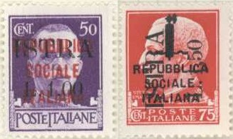
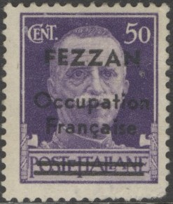
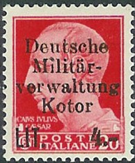
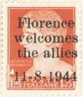

1929 issue; Emperor Augustus and King Victor Emanuel III (Vittorio Emanuele III)
Return To Catalogue - Italy overview - Issues of 1900-1929 - King Victor Emanuel III
Note: on my website many of the
pictures can not be seen! They are of course present in the
catalogue;
contact me if you want to purchase the catalogue.
1929 issue; Emperor Augustus and King Victor Emanuel III
(Vittorio Emanuele III)

Woman symbolising Italy and Julius Ceasar design
8 different designs: 2 c orange (arms, 1930) 5 c brown (Romulus, Remus and the wolf) 7 1/2 c violet (Julius Ceasar, with fascist emblems at bottom left and right) 10 c brown (Emperor Augustus, with fascist emblems) 15 c green (woman symbolising Italy, with fascist emblems) 20 c red (design as 7 1/2 c) 25 c green (Victor Emanual III facing the left, with fascist emblems) 30 c brown (Victor Emanual III full face, with fascist emblems) 35 c blue (design as 15 c) 50 c violet (design as 30 c) 75 c red (design as 25 c) 1 L violet (design as 7 1/2 c, 1942) 1.25 L blue (design as 25 c) 1.75 L red (design as 10 c) 2 L red (design as 15 c) 2.55 L green (design as 5 c) 3.70 L violet (design as 5 c, 1930) 5 L red (design as 5 c) 10 L violet (design as 15 c) 20 L green (design as 7 1/2 c) 25 L black (design as 10 c) 50 L violet (design as 25 c) Surcharged
'L.2,50' and bars on 1.75 L red As above, but with fascist emblems removed at both sides (1944-45, 5 different designs)
10 c brown (Augustus) 20 c red (Julius Ceasar) 30 c brown (Victor Emanuel III full face) 50 c violet (Victor Emanuel III full face) 50 c violet (woman) 60 c orange (woman) 60 c green (Victor Emanuel III full face) 1 L violet (Julius Ceasar) 1.20 L brown (woman) 2 L red (woman) 5 L red (wolf) 10 L violet (woman)
Stamps with overprint "GOVERNO MILITARE ALLEATO" were used in 1944 by the allied forces.

5 L red without fasces with 'A.M.G. V.G.' overprint
Stamps in the above designs, exist with overprint "A.M.G. V.G." and were issued by the Allied Military Government of the United States and Great Britain for use in Venezia Giulia (1945). They exist on the 10 c brown (with fasces), 20 c red (Julius Ceasar with fasces), 20 L green (Julius Ceasar with fasces) and on the following stamps without fasces: 10 c brown, 20 c red, 60 c orange, 60 c green, 1 L violet, 2 L red, 5 L red and 10 L violet.


These stamps with "ISOLE JONIE" overprint were issued
for the Ionian Islands
Stamps in the above design, or similar designs, exist with overprint "REPUBLICA SOCIALE ITALIANA", this overprint with an ax, or only an axe, and were issued in 1944 for the Italian Social Republic. Also overprints with "G.N.R" were issued for the Socialist Italian Republic.
Some values exist with an eagle and "PROVINZ LAIBACH LJUBLANIKA POKRAJINA" overprint (for Ljubljana).

Overprint "Italia Repubblicana Fascista Base Atlantica"
Stamps with overprint "Italia Republicana Fascista Base Atlantica" were issued for a military base in Bordeaux (France): 10 c brown, 15 c green, 20 c red, 25 c green, 30 c brown and 50 c violet (all with fasces, sorry; no image available yet).
The above stamps overprinted with "mPHA GOPA" were issued for the Italian occupation of Montenegro.
These stamps with overprint "Deutsche Besetzung Zara" were issued for Zara.
Stamps with overprint "ISTRA" (also with additional "REPUBLICA SOCIALE ITALIANE") and were issued for the Yugoslavian occupation of Istria:


 
A 50 c with fasces, with overprint "FEZZAN Occupation
Française", "N.D. Hrvatska"
(Croatia) and "Deutsche Militar- verwaltung Kotor"
(Kotor)

Unissued stamp for Albania, overprint
"REGNO D'ALBANIA MBRETNIA SHQIPTARE Qind. 15" on 75 c
red
1943 Overprinted "P.M." = "Posta Militare", military stamps on stamps with fasces
5 c brown 10 c brown 15 c green 20 c red 25 c green 30 c brown 50 c violet 1 L violet 1.25 L blue 1.75 L red 2 L red 5 L red 10 L violet
1943 Above stamps (King) with attached labels (imperforated in between), war propaganda stamps
25 c green (navy) 25 c green (army) 25 c green (air force) 25 c green (knife and helmet) 30 c brown (navy) 30 c brown (army) 30 c brown (air force) 30 c brown (knife and helmet) 50 c violet (navy) 50 c violet (army) 50 c violet (air force) 50 c violet (knife and helmet)
The text of the 'navy label' is: "LA DISCIPLINA E' ARMA DI VITTORIA", the text of the 'air force' label is: "TUTTO E TUTTI PER LA VITTORIA", the text of the 'army label' is "ARMI E CUORI DEVONO ESSERE TESI VERSO LA META". Finally the text of the 'knife and helmet' label reads "LA VITTORIA SARA DEL TRIPARTITO". Because of the politically sensitive message, sometimes the labels at the right hand side were removed just after the war ended.
with overprint "Deutsche Besetzung Zara"
With overprint "REPUBLICA SOCIALE
ITALIANE"
These stamps with overprint "Deutsche Besetzung Zara" were issued for Zara.
1945 Express stamp in the woman design
5 L red
Various local overprints exist:


25 c green (wings, 1932) 50 c brown (Pegasus horse with wings) 75 c brown (woman, 1932) 80 c red (design as 25 c) 1 L violet (design as 75 c) 2 L blue (arrows, larger sized stamp) 5 L green (design as 50 c) 10 L red (design as 50 c)
The 50 c brown stamp exists with overprint "A.M.G. V.G." (Venezia Guilia).
1943 Overprinted "P.M." = "Posta Militare", military stamps
With "P.M." overprint
50 c brown 1 L violet 2 L blue 5 L green 10 L red
Stamps with overprint "ISTRA" were issued for the Yugoslavian occupation of Istria:
5 L stamp with local overprints
"Poste Italiane Imperia liberata 24-4-45" and
"C.L.N. Ponte Chiasso"
"BOLLO" (red) on a "ISOLE JONIE" (red) on a
50 c airmail stamp of Italy used on the Ionian
Islands.
20 c red 35 c blue (red overprint) 50 c violet (red overprint)
Stamps - Francobolli - Timbres - Briefmarken - Postzegels
{kind=link}
{kind=link}